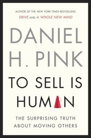
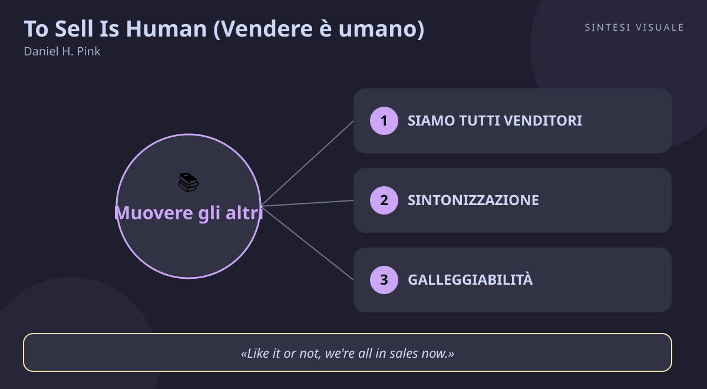

Home / Libri / To Sell Is Human (Vendere è umano)

To Sell Is Human (Vendere è umano)
Daniel H. Pink · Vendite e persuasione
«To Sell Is Human (Vendere è umano)»
- Sintonizzazione
- Galleggiabilita
- Chiarezza
- Servi per primo
📘Riassunto
La scintilla centrale. Solo una persona su nove lavora ufficialmente nelle vendite, ma tutte le altre passano circa il 40% del tempo a persuadere, influenzare e convincere senza vendere nulla in senso stretto: Pink chiama tutto questo non-sales selling, e sostiene che imparare a farlo bene — e in modo etico — sia una delle competenze decisive della nostra epoca.
La struttura logica. La prima parte racconta la "rinascita del venditore": siamo tutti venditori, l'imprenditorialità e l'elasticità premiano chi sa adattarsi, e il mondo è passato dal "compratore stia attento" al "venditore stia attento", perché oggi il cliente arriva già informato e smaschera in un attimo chi bara. La seconda parte definisce come essere: le nuove ABC del vendere — Sintonizzazione (attunement), Galleggiabilità (buoyancy) e Chiarezza (clarity) — che sostituiscono il vecchio motto "Always Be Closing". La terza parte spiega cosa fare: pitch efficaci, improvvisazione e servizio.
Il punto di svolta. Pink dimostra con la ricerca che i migliori venditori non sono gli estroversi trascinatori, ma gli ambiversi — le persone a metà strada tra introversione ed estroversione — perché sanno ascoltare e calibrare invece di travolgere. È la prova che vendere è sintonizzarsi, non spingere.
L'eredità oggi. In un mondo dove chi compra confronta prezzi e recensioni in dieci secondi, la manipolazione non funziona più: funzionano onestà, chiarezza e servizio. Il libro è diventato un riferimento per chi vende idee e progetti, non solo prodotti.
💡Concetti chiave
- Siamo tutti venditori: gran parte della giornata la passi a "muovere gli altri" senza vendere nulla.
- Sintonizzazione: mettiti davvero nei panni dell'altro prima di aprire bocca.
- Galleggiabilità: resta a galla nell'oceano dei no con le domande giuste prima, i rapporti giusti durante, le spiegazioni giuste dopo.
- Chiarezza: trova il problema vero, non limitarti a risolvere quello sbagliato.
- Pitch che apre conversazioni: il buon pitch non chiude, invita a partecipare.
- Servi per primo: chi muove gli altri è un servitore, non un manipolatore.
📖1. Siamo tutti venditori
- Definizione il non-sales selling è persuadere, convincere e influenzare gli altri in cambio di tempo, attenzione ed energie, non di soldi: il manager che propone un progetto, l'insegnante che motiva la classe, il genitore che tratta sui compiti.
- Esempio prepari una slide per convincere il tuo capo a cambiare fornitore: non stai "vendendo" nulla in senso stretto, ma stai muovendo una persona a scambiare qualcosa che ha (la sua abitudine) con qualcosa che hai tu (la tua proposta).
- Come applicarlo conta per una settimana quante volte al giorno cerchi di muovere qualcuno; prendi coscienza del tuo "lavoro di vendita invisibile" e preparalo con la stessa cura di una trattativa vera.
- Errore comune pensare "io non so vendere, non è roba mia" e improvvisare ogni conversazione importante senza preparazione.
- Collegamento si lega al Golden Circle di Simon Sinek (partire dal perché): prima di muovere qualcuno, chiarisci il senso di ciò che proponi.
📖2. Sintonizzazione
- Definizione la sintonizzazione è la capacità di armonizzare azioni e punto di vista con l'altra persona e con il contesto: capire cosa pensa, non solo cosa prova. Pink la mette prima di tutto perché senza non esiste persuasione onesta.
- Esempio un cliente dice "è troppo caro": invece di difendere il prezzo, gli chiedi a cosa paragona il costo e scopri che teme di non saper usare il prodotto — il vero ostacolo non era il prezzo.
- Come applicarlo segui le tre regole di Pink — abbassa il tuo senso di potere (chi si sente superiore ascolta peggio), usa la testa oltre al cuore (immagina cosa pensa l'altro, non solo cosa prova), rispecchia con discrezione gesti e linguaggio dell'interlocutore.
- Errore comune confondere empatia emotiva con comprensione: commuoverti per l'altro non ti dice che cosa gli serve davvero.
- Collegamento richiama l'ascolto attivo di Dale Carnegie e gli studi sul chameleon effect: chi rispecchia con naturalezza crea più fiducia.
📖3. Galleggiabilità
- Definizione la galleggiabilità è restare a galla nell'oceano dei rifiuti che chiunque provi a muovere gli altri incontra ogni giorno: si allena prima, durante e dopo ogni tentativo.
- Esempio mandi dieci candidature e ricevi nove silenzi: invece di concludere "non valgo niente", rileggi ogni risposta cercando l'informazione utile (profilo troppo junior? candidatura generica?) e riparti.
- Come applicarlo prima usa il dialogo interrogativo ("riuscirò a prepararmi bene per questo colloquio?") invece degli slogan ("ce la farò!"); durante mantieni un rapporto positivo tra emozioni buone e cattive; dopo spiega gli insuccessi come temporanei, specifici e modificabili, non come verdetti su di te.
- Errore comune motivarsi con frasi fatte urlate allo specchio: la ricerca mostra che le domande preparano meglio delle affermazioni.
- Collegamento si intreccia con il mindset di crescita di Carol Dweck: il no è un dato sul tentativo, non un giudizio sulla persona.
📖4. Chiarezza
- Definizione la chiarezza è aiutare gli altri a vedere la propria situazione con occhi nuovi: oggi il valore non sta nel risolvere problemi, ma nel trovare il problema giusto, perché le soluzioni si trovano ovunque mentre i problemi veri restano nascosti.
- Esempio un amico vuole "un corso di inglese" ma parlando scopri che gli serve solo superare i colloqui di lavoro in videochiamata: gli risparmi mesi di studio generico con poche lezioni mirate.
- Come applicarlo fai domande che ribaltano la prospettiva e poi incornicia la proposta con le cinque cornici di Pink: meno opzioni, esperienza invece di oggetto, etichette che cambiano il senso, potenziale da sbloccare, un piccolo difetto dichiarato con onestà per rendere tutto più credibile.
- Errore comune sommergere l'altro di informazioni e opzioni convinti che "più scelta" significhi "più valore": confonde e blocca.
- Collegamento dialoga con la legge di Hick e con Cialdini: meno alternative chiare battono un catalogo infinito.
📖5. Pitch che apre conversazioni
- Definizione il pitch moderno non è il monologo dell'ascensore ma l'invito a una conversazione: offre qualcosa di così convincente che l'altro entra come partecipante e si arriva insieme a un esito buono per entrambi.
- Esempio invece di presentare la tua idea in dieci slide, apri con una domanda in una frase ("e se dimezzassimo i resi con un video di 60 secondi?") e lasci che sia l'altro a chiederti come.
- Come applicarlo scegli tra i sei eredi dell'elevator pitch di Pink — una parola, una domanda, una rima, un aneddoto, un pitch alla Pixar ("c'era una volta... ogni giorno... finché un giorno..."), un pitch Twitter da 140 caratteri — e provali in situazioni reali diverse.
- Errore comune recitare il pitch come un copione chiuso: se l'altro non può intervenire, smette di ascoltare dopo venti secondi.
- Collegamento si sposa con Made to Stick di Chip e Dan Heath: concreto, inatteso e narrativo batte astratto e completo.
📖6. Servi per primo
- Definizione il servant selling ribalta il mestiere: chi muove gli altri serve prima e vende dopo, e si giudica con due domande — se l'altro accetta, la sua vita migliorerà? Finita l'interazione, il mondo sarà un posto un po' migliore?
- Esempio il commesso che ti sconsiglia il modello più caro perché per il tuo uso basta quello base: perde una vendita oggi e guadagna un cliente che tornerà per anni e ti farà pubblicità gratis.
- Come applicarlo prendi in prestito tre regole del teatro di improvvisazione — ascolta davvero le "offerte" dell'altro, rispondi "sì, e..." invece di "sì, ma...", fai fare bella figura al tuo interlocutore — e chiudi ogni proposta chiedendoti se migliora davvero la sua vita.
- Errore comune servire a parole e spingere nei fatti: la gente fiuta in un attimo la differenza tra cortesia tattica e interesse genuino.
- Collegamento deriva dalla servant leadership di Robert Greenleaf: prima servi, poi guidi — o vendi.
💬Citazioni da ricordare
"The purpose of a pitch isn't necessarily to move others immediately to adopt your idea. The purpose is to offer something so compelling that it begins a conversation, brings the other person in as a participant, and eventually arrives at an outcome that appeals to both of you."
Perché conta: ridefinisce il pitch come invito e non come spinta, ed è la frase più citata del libro.
"Like it or not, we're all in sales now."
Perché conta: è la tesi del libro in una riga — smette di essere uno slogan e diventa un programma di lavoro.
"If the person you're selling to agrees to buy, will his or her life improve? When your interaction is over, will the world be a better place than when you began?"
Perché conta: è il test etico del venditore-servitore, da usare prima di ogni proposta importante.
🌍Esempi di oggi
- La riunione del lunedì mattina. Devi convincere i colleghi a cambiare software gestionale: invece di elencare funzioni, parti dal loro problema vero (i venerdì persi a sistemare errori) e fai una domanda-pitch — è chiarezza e sintonizzazione in azione.
- Il bimbo e le verdure. Dire "mangiale e basta" è chiudere; raccontare che le carote servono "per vedere al buio come i supereroi" è incorniciare l'esperienza: stesso obiettivo, persuasione umana invece di imposizione.
- Il preventivo del freelance. Due opzioni chiare più una terza sconsigliata onestamente battono un listino di dieci voci: cornice del "meno" più cornice del difetto dichiarato, e il cliente firma più sereno.
🛠️Azioni pratiche
- Conta i tuoi momenti da venditore: per tre giorni annota ogni volta che cerchi di muovere qualcuno e prepara il prossimo come una piccola trattativa (obiettivo, punto di vista dell'altro, domanda di apertura).
- Sostituisci un'affermazione motivazionale con una domanda ("riuscirò a...?") prima della prossima conversazione difficile, e dopo un no scrivi tre cause specifiche e temporanee invece di un verdetto su di te.
- Riscrivi una tua proposta abituale (email, preventivo, idea) in un pitch da una frase-domanda e testalo su una persona reale, poi chiedile che cosa ha capito.
💎Da portare a casa
Vendere è umano quando smetti di spingere e inizi a sintonizzarti, chiarire e servire: muovere gli altri è un atto di cura, non di pressione.
Rispondi in chat con il numero di un concetto (1-6) per approfondirlo, oppure fai una domanda su un tema: vendite, persuasione, negoziazione, public speaking, stress, emozioni, carriera.
📄
# To Sell Is Human (Vendere è umano) — Daniel H. Pink
Titolo: To Sell Is Human: The Surprising Truth About Moving Others · Autore: Daniel H. Pink · Anno: 2012 (Riverhead Books, 272 pagine)
Questo libro conta oggi perché ha ribaltato un pregiudizio: vendere non è il mestiere di pochi imbonitori, è quello che facciamo quasi tutti per quasi metà del nostro tempo di lavoro — convincere un collega, un cliente, un figlio, un amico. Ed è utile a chiunque debba "muovere gli altri": insegnanti, genitori, freelance, manager, commerciali, ma anche a chi vuole farsi ascoltare di più nella vita di tutti i giorni.
🖼️In un colpo d’occhio

Tocca l’immagine per ingrandirla.